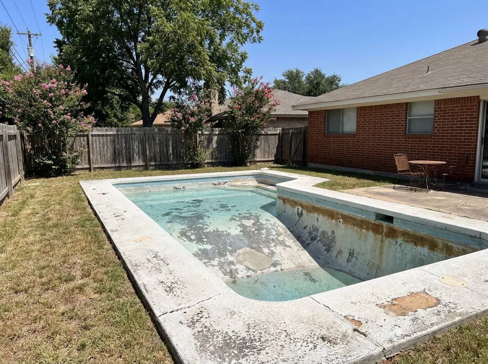

Alamo Pool
Alamo Pool

San Antonio's combination of scorching summers, limestone-rich soil, and hard Edwards Aquifer water is one of the most demanding environments a pool surface can face. What might last 15 years in a mild climate might only last 8–10 years here — and sometimes less if water chemistry isn't carefully managed.
The good news: your pool tells you when it's ready for a new surface. You just have to know what to look for. Here are the 7 most common signs that your San Antonio pool needs resurfacing — and what each one means for your pool's health.
Rough or Abrasive Surface Texture
Run your hand along the pool wall just below the waterline. Does it feel rough — like sandpaper or a cheese grater? If so, that's a clear sign your plaster has degraded beyond the smooth finish it once had. This roughness doesn't just ruin swimsuits and scratch feet — it also means the surface is porous and absorbing far more water than it should, consuming extra chemicals and harboring algae in microscopic pits where brushes can't reach.
This is one of the most common complaints we hear from San Antonio homeowners, and it's almost always a sign that resurfacing is overdue. Once plaster reaches this stage, there's no treatment that restores smoothness — only a new surface does.
Persistent Staining That Won't Brush Away
Every pool gets stains occasionally — algae, leaves, metal deposits. But those stains should respond to proper chemical treatment and brushing. If you've treated your pool for staining and the marks won't budge, or if they come back within days of treatment, the stains have penetrated deep into degraded plaster that can no longer be cleaned effectively at the surface.
Common staining types in San Antonio include:
- Calcium scale (white/gray patches) — from hard Edwards Aquifer water depositing calcium carbonate on the surface
- Metal staining (rust or purple-black spots) — from iron or copper in San Antonio's water supply reacting with the plaster
- Organic staining (brown or green) — from tannins in leaves, algae, or tree debris that have penetrated the porous surface
Acid washing can sometimes delay resurfacing by 1–2 years, but once staining is this persistent, a new surface is the only real solution.
Visible Cracks or Chipping
Cracking in a pool surface is serious — and in San Antonio, it's more common than in most parts of the country. The caliche and limestone soil under Bexar County homes expands and contracts with seasonal moisture changes, putting stress on pool shells. When you see cracks in the plaster surface, they may be:
- Surface (plaster) cracks: Cracks in the finish layer only — these are common and indicate the plaster has aged and dried out. They allow water to reach the concrete shell below and should be addressed before they worsen.
- Structural cracks: Cracks that run through the concrete shell itself — these require structural repair before resurfacing and indicate soil movement under the pool.
Chipping — where chunks of plaster detach from the shell — is always a sign that resurfacing is urgent. Those exposed areas of bare concrete will deteriorate rapidly if left untreated.
Unexplained Water Loss
All pools lose some water to evaporation — particularly in San Antonio's summer heat, where evaporation of 1/4" to 1/2" per day is normal. The bucket test is the standard way to distinguish evaporation from a leak: fill a bucket with pool water, set it on a pool step, and mark both the pool water level and the bucket water level. After 24 hours, if the pool level dropped more than the bucket, you have a leak.
When pool surface degradation reaches the point that water is actively seeping through the plaster and into the pool shell, resurfacing is not optional — it's urgent. Water infiltration into the shell causes rebar corrosion, concrete spalling, and eventually major structural repairs that cost far more than timely resurfacing.
Significant Color Fading or Discoloration
White plaster that starts to look gray, dingy, or patchy — or colored plaster that has faded unevenly — is telling you the surface material has broken down beyond its serviceable life. In San Antonio, UV exposure is intense from March through October, and it degrades pigments and bleaches plaster surfaces noticeably faster than in northern climates.
Uneven fading is particularly telling: if you can see obvious differences in color between different sections of the pool (lighter on south-facing walls that get more sun, darker in shaded corners), the surface is well past its prime and beginning to fail at an accelerating rate.
The Pool Is More Than 10–12 Years Old
If your San Antonio pool has white plaster that's over 10 years old, there's a high probability it's approaching or past the point where resurfacing makes more sense than continued maintenance. Even well-maintained plaster in San Antonio's hard water environment has a finite lifespan. As a reference point:
- White plaster: 8–12 years in San Antonio conditions
- Quartz aggregate: 12–18 years
- Pebble finish: 15–25 years
Age alone isn't always sufficient reason to resurface — some well-maintained pools hold up beyond these ranges. But if your pool is in this age range AND showing other signs on this list, it's time to schedule a free assessment.
Constantly Fighting Chemical Imbalance
A healthy pool with a solid surface should hold its water chemistry relatively well with routine weekly balancing. If you're adding chemicals multiple times per week just to keep pH, alkalinity, and sanitizer levels in range — and your pool still turns cloudy or green regularly — a degraded, porous surface is likely the culprit.
Deteriorated plaster leaches calcium into the water, throws off pH, and creates rough hiding spots for algae that make maintaining water clarity a constant battle. We regularly hear from San Antonio homeowners who've spent $500–$1,000 per year on excessive chemical costs for a pool with degraded plaster — money that would have been better applied toward resurfacing.
A fresh surface dramatically reduces chemical demand, making your pool both easier and cheaper to maintain going forward.
What to Do Next
If your San Antonio pool is showing one or more of these signs, the first step is a free on-site assessment from a licensed pool resurfacing contractor. An experienced eye can tell you definitively whether you need full resurfacing now, whether you can extend the surface life with spot treatments for another season or two, or whether there are structural issues that need to be addressed.
Don't wait until the surface fails completely — catching it early gives you more finish options and prevents the more costly structural damage that comes from prolonged water infiltration through a failing surface.
Seeing These Signs in Your Pool?
Call Alamo Pool Resurfacing for a free, no-obligation inspection. We'll tell you honestly whether you need resurfacing now or can wait — and if you do need it, we'll show you all your finish options with samples at your home.
Call (726) 268-5597Or request an estimate online →